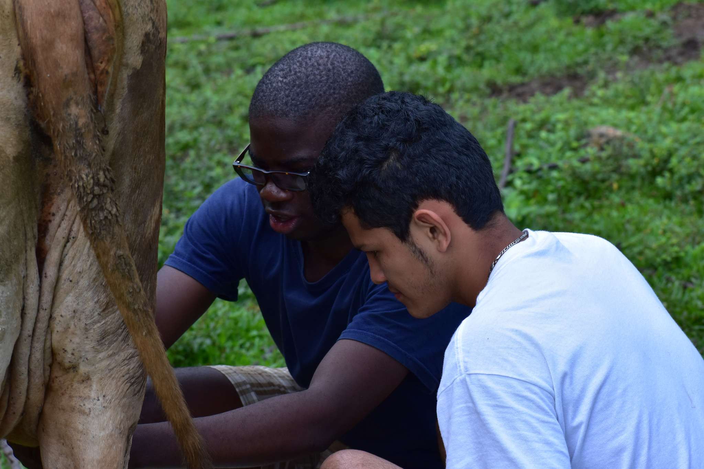
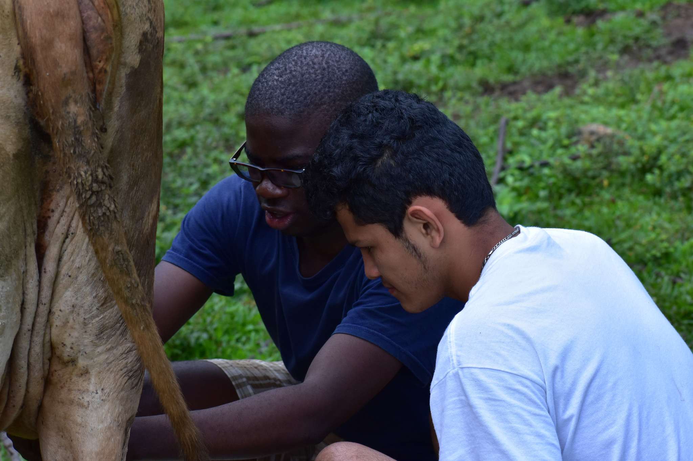

______ My work experience so far. _______
Dartmouth ITS
Student IT Assistant Consultant , Summer 2017
Provided technical support for equipment,network connection and software installation tasks.
KPMG, Harare ZW
Corporate Finance Intern, Summer 2016
Prepared valuations and due diligence reports; Drafted presentations for M&A, debt equity swaps and IPOs.
Agua Inc, Gambia
Engineering Intern , Summer 2015
Contributed to the company's front-end development and carried out research on ethanol production.
Enigma Machine, Digital Electronics (COSC 56)
Partner, Douglas Toullmadge
We digitally implemented a polyalphabetic variable substitution cipher in the style of the mechanical Enigma Machine. Our system uses the RS 232 protocol to receive, encode, and transmit ASCII characters ranging from hexadecimal codes x20-x7E. Selecting from a set of 857,375 initial conditions, the users send a plain text message from a terminal emulator over the serial interface and receive the cipher text in the termical. When the cipher text is re-transmitted using the same initial condition, the plain text is the recoverd. With both the initial conditions and memory mapping configuration kept as shared secrets between users of the cipher, potential advisories are faced with evaluating 10^500 message encoding configurations in a brute force attack, well beyond computationally feasable
Health Recommender System, Modern Information Technologies (ENGS 112)
I built a recommender system that mines data from online open source resources to extract trends and help provide health recommendations. The use of health recommender systems have been on the rise due to the increase in data availabilty and mining techniques.Most of these systems uilize machine learning algorithms to assist end-users to determine diagnosis and preventive measures for potential health risks. Most recommender systems primarily focus on patients as the end-user rather than other players such as medical professionals and researchers. In this project, I tried a different approach that focuses on policy-makers as end-users. This approach has potential to minimise cost, allocate resources more efficiently , and detect potential disease outbreaks through quantitative analysis of readily available health data.
Officehour App, FullStack Web Development (COSC 52)
Partners: Tyler Burman, Sidney Wijngaarde, Daniella Midulla, Joshua Utterback
This app allows users to see a schedule of each week's office hours. For each session, you'll see something like the following INSERT SOMETHING A user can join a queue where questions are posted. As the TA or Professor meets with these students and answers their questions, they are either removed from the queue or their answer is published to a list of questions that the TA/Professor feels might help other students as well. The queue allows everyone to view how crowded the office hours are, as well as manage long waits. It also makes sure nobody is left out, and by stating the topic/question the user would like to learn about ahead of time, people with the same question can be dealt with all in once rather than several times.App can be found at http://officehoursapp.surge.sh
Huffman Coding, Problem Solving via Object Oriented Programming (COSC 10)
I implemented a Huffman code to compress and decompress files using tree data structures. Huffman encoding gives the smallest possible fixed encoding of a file in which a given letter is represented by the same code-word wherever it appears in the file. The algorithm I used had two parts: first, to construct a binary tree using a priority queue. then, to use the binary tree to generate the codewords. Each character in the binary tree is a leaf, and the path from the root to that character gives that character's codeword. Specifically, each edge is labelled with a 0 or 1, and edges going to a left child append a 0 to the codeword, with edges going to a right child appending a 1.
Semiconductor thin films, Introduction to Material Science (ENGS 24)
Partners: Annie Yang, Daniel lee, Pranav Prasad
We studied the crystallization process of Ge and GeSn with the goal to optimize the crystallinity of the semiconductor thin film materials as well as develop a theoretical model for the crystallization process. The crystallization of Ge and GeSn thin films on amorphous layers is particularly interesting because of two reasons: (1) They can be applied to high quality photonic devices on Si to boost the speed and energy efficiency of on chip data links, and (2) They provide a gateway towards cost effective, high efficiency tandem solar cells on glass substrates due to the lattice matching of Ge and GeSn with many III-V semiconductor materials.
Shopping Cart Wheels, Introduction to Engineering (ENGS 21)
Partners: Matthew West, Mackenzie Carson, Redal Ram
Caster wheels on shopping carts have a predisposition to flutter, which causes stress for cart users. Thus, the wheel must be modified or redesigned to eliminate fluttering. In th project, we created a spherical wheel to replace caster wheels on the front of shopping carts. This wheel could eliminate flutter, reducing wear, and mobility difficulties.


 
